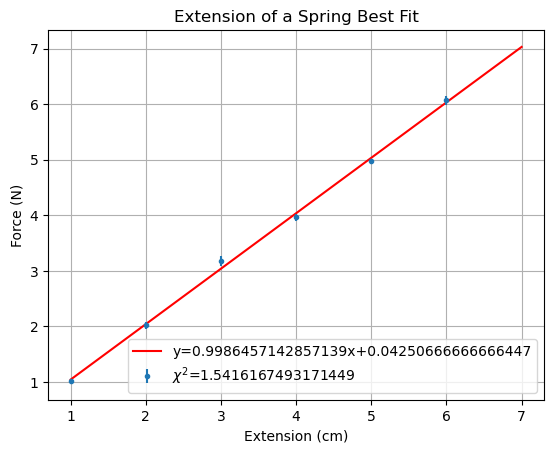
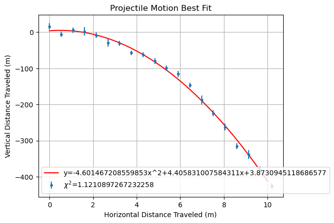

While being poorly named, linear regression is the method used to fit observed data to some function $f(x)$ that governs the phenomena. This is most often used to model linear trends using equations of the form, $$y=mx+b.$$ However, the reason it is named linear regression, is not because of its use to model linear equations, but because of its use of linear algebra. In this project, linear regression is walked though and shown step by step how it works to solve the problem of fitting data.
The Set-Up #
Let some phenomena be governed by the equation $f(x)$. Then, we are able to physically collect data of the phenomena in the form of ordered pairs: $$(x_1,y_1),(x_2,y_2),\dots ,(x_k,y_k).$$ In a theoretical case, $f(x_i)=y_i$ but this obviously never happens due to uncertainty and error in measurements. Therefore, we need some way to measure the error between our data and the function that governs the phenomena. This is given by, $$\sum_{j=1}^k \frac{|f(x_i)-y_i|}{k}.$$ Hence, we want to minimize this error so that our function matches the data as closley as possible. However, we do not always want to minimize this error because with a high uncertainty in the data the error can be very low even while the function is not a good fit. Along with that, we do not know what $f(x)$ is, or else we would already be done. So, this is nothing more than a linear algebra problem. In this case we will show how to solve for a linear function $f(x)$ but this same method is used to solve for best fit parabolas, and higher polynomial functions which will be shown later.
The Problem #
Given some data $(x_1,y_1),\dots ,(x_k,y_k)$ we want to find some function $y=mx+b$ tbat best fits the data. So, we can make a system of equations that each hit one data point $x_i$.
$$ y_1=mx_1+b \\y_2=mx_2+b \\ \vdots \\ y_k=mx_k+b$$This gives us k equations and 2 unknowns, the slope and intercept of our final line. Hence this gives us the following solution:
$$\overrightarrow{y}=\begin{bmatrix} x_1 & 1 \\ x_2 & 1 \\ \vdots & \vdots \\ x_k & 1 \end{bmatrix} \begin{bmatrix} m\\ b \end{bmatrix}.$$Since we have more equations than variables it is an overdetermined system so there is obviously no solution or once again we would be done instantly. However, since there is no solution, the best we can do is to find some $[m,b]\in\mathbb{R}^2$ such that $$\left\lvert\overrightarrow{y}-\begin{bmatrix} x_1 & 1 \\ x_2 & 1 \\ \vdots & \vdots \\ x_k & 1 \end{bmatrix} \begin{bmatrix} m\\ b \end{bmatrix}\right\rvert$$
is minimized.
Final Formula #
Skipping past most of the linear algebra proofs, ones that include very high level ideas of vector spaces and projections, here is the final formula needed to find a best fit for the data.
Let $A=\begin{bmatrix} x_1 & 1 \\ \vdots & \vdots \\ x_k & 1 \end{bmatrix}$ and $A^*=\begin{bmatrix} x_1 & \cdots & x_k \\ 1 & \cdots & 1 \end{bmatrix}$ where $A^*$ is the adjoint of $A$. Hence, $A^{*}A=\begin{bmatrix} \sum x_i^2 & \sum x_i \\ \sum x_i & k \end{bmatrix}$. So, $$\begin{bmatrix} m\\ b \end{bmatrix}=\left(A^* A\right)^{-1}A^* \overrightarrow{y}$$
Also note that this will almost always be invertible for a high enough k value. The proof behind this is not too hard but will once again be left out to avoid confusion. However, just keep in mind that unless the determinant is equal to 0, meaning it is not invertible, this formula will work.
The Code #
In the folowing cell is the commented code used to match basic data sets to their best fits. It uses these formulas to solve for the slope and intercept of the linear equations or the coefficients in the higher degree polynomials. The line is then printed along with error bars on the data. It is easily seen that this creates very accurate best fit lines are this is the standard algorithm used to determine the best fit lines.
The Data #
As an example, let's say we did an experiment where you stretched a rubber band to 6 different extensions, 5 times each.
So, we have measurements that look like:
| Extension (cm) | Force Trial 1 (N) | Trial 2 (N) | Trial 3 (N) | Trial 4 (N) | Trial 5 (N) |
|---|---|---|---|---|---|
| 1.0 | 1.03 | 1.147 | 0.934 | 1.049 | 0.924 |
| 2.0 | 1.91 | 2.178 | 2.127 | 2.005 | 1.963 |
| 3.0 | 3.065 | 3.107 | 3.099 | 3.135 | 3.089 |
| 4.0 | 3.98 | 3.983 | 4.003 | 4.07 | 4.055 |
| 5.0 | 5.041 | 4.892 | 4.949 | 5.055 | 4.955 |
| 6.0 | 5.896 | 6.066 | 5.89 | 6.136 | 6.08 |
We want to figure out how well Hooke's law describes the rubber band for the data that we took. In order to do that, we are going to plot the data and fit a line to the points using the Linear Regression Algorithm described above. Next, there are many ways to assess how well a curve fits data, so the method that we will use here is called Chi-Squared,
$$\chi^2=\frac{1}{N} \sum_{i=1}^N \frac{(f(x_i)-y_i)^2}{\delta y_i^2}$$where we have data points $(x_1, y_1) ... (x_N, y_N)$ with associated uncertainties $\delta y_i$, and $f(x_i)$ is the function we are fitting evaluated at $x_i$.
View Source Code
#Import the required packages
import numpy as np
import matplotlib.pyplot as plt
#Our recorded data
x=[1.0,2.0,3.0,4.0,5.0,6.0]
y=[[1.03 , 1.147, 0.934 , 1.049 , 0.924],
[1.81,2.178,2.127,2.005,1.963],
[3.265,3.107,3.499,3.135,2.889],
[3.7,3.983,4.003,4.07,4.055],
[5.041,4.892,4.949,5.055,4.955],
[5.896,6.366,5.89,6.136,6.08]]
#Convert the data to numpy arrays
x=np.array(x)
y=np.array(y)
#Define a function that calculates the best fit
def BestFitLine(x,y):
#First we are creating our matrix A, which as shown above has a column of 1's
ones=np.ones(x.shape)
x1=np.vstack([x,ones])
x1=np.transpose(x1) #Transpose x so that is has two columns
y_row,y_col=y.shape #Extract the shape of y
#We must now sum y to get the average of each extension measurement across the 5 trials
y_=[] #Our new y array that has the average values
for i in range(y_row):
suum=0
for j in range(y_col):
suum+=y[i][j]
avg=suum/y_col
y_.append(avg) #Appends each extensions average to the new array
#Using the Linear Regression Algorithm [m,b]=(A*A)^-1 A*y
A=x1 #Define our A matrix
ATr=np.transpose(A) #Define our A* matrix
AIn=np.linalg.inv(np.matmul(ATr,A)) #Find the inverse of A*A
Ay=np.matmul(ATr,y_) #Multiply the adjoint to our new y_
mb=np.matmul(AIn,Ay) #Finally multiply again to solve for our mb matrix
#Calculating uncertaintys and Chi-Squared
dy=np.std(y, axis=1)/np.sqrt(y_col) #This formula gives the uncertainty by calculating the std and dividing by the square-root of the number of trials
def f(x): #Define our lines
return mb[0]*x+mb[1]
#Calculating Chi Square
chisquare=0
for i in range(y_row):
chisquare+=((f(x[i])-y_[i])**2)/(dy[i]**2)
chisquare=chisquare*(1/y_row)
#returning the slope, intercept, uncertaintys, and chi-square and overage y values
return mb[0],mb[1],dy,chisquare, y_
#Call the function
slope,intercept,dy,chisquare, y_=BestFitLine(x,y)
#Create the graph of the best fit line
x1 = np.linspace(1,7,100)
y1 = slope*x1+intercept
plt.plot(x1, y1, '-r')
#Plot the points along with error bars
plt.errorbar(x,y_, dy, fmt='.')
plt.title("Extension of a Spring Best Fit") #Title of the graph
plt.xlabel('Extension (cm)') #x axis label
plt.ylabel('Force (N)') #y axis label
#Define the legend labels
s='y='+str(slope)+'x+'+str(intercept)
ss='$\u03C7^2$='+str(chisquare)
plt.legend([s,ss], loc=0, frameon=True)
plt.grid()
plt.show() #show the graph
Parabola #
As stated above, linear regression is not only used for linear models as many think it is. It simply uses linear algebra to accomplish fitting this best fit and can easily do polynomials of a higher degree. Hence, to find the best fit parabola we start with a similar set-up. We start with the same type of ordered-pair data points of the form: $(x_1,y_1),(x_2,y_2),\dots ,(x_k,y_k).$ However, the system of equations simply adds one extra term to each equation and has the form:
$$ y_1=a_2x_1^2+a_1x_1+a_0 \\ y_2=a_2x_2^2+a_1x_2+a_0 \\ \vdots \\ y_k=a_2x_k^2+a_1x_k+a_0.$$ Hence, $$\overrightarrow{y}=\begin{bmatrix} x_1^2 &x_1& 1 \\ \vdots & \vdots &\vdots \\ x_k^2 &x_k& 1 \end{bmatrix} \begin{bmatrix} a_2\\ a_1 \\ a_0 \end{bmatrix}.$$ So, $$A=\begin{bmatrix} x_1^2 &x_1& 1 \\ \vdots & \vdots &\vdots \\ x_k^2 &x_k& 1 \end{bmatrix}$$ and $$A^* = \begin{bmatrix} x_1^2 &\cdots& x_k^2 \\ x_1 & \cdots &x_k \\ 1 &\cdots& 1 \end{bmatrix}.$$
Hence, $$A^* A= \begin{bmatrix} \sum x_k^4 &\sum x_k^3& \sum x_k^2 \\ \sum x_k^3 &\sum x_k^2 & \sum x_k \\ \sum x_k^2 &\sum x_k &k \end{bmatrix}.$$
From there, solving for the best fit is found using the same formula above. So, linear regression is really able to be used for any $f(x)$ equation, all it takes to modify it is to rewrite your system of equations and find the unknowns. This means that as an equation gets more complex with more unknowns, the computational power required to solve this will increase. You could even do this for non-polynomial functions by turning these other functions into their taylor series and finding the fit this way. So, we are able to fit a parabola to a set a data points using the same type of linear algebra algorithm.
The Data #
Shown below is the code fitting a parabola to a fake dataset of projectile motion. I simply the projectile motion code off the internet to generate some fake motion data. It simply defines a projectile being launched and then adds noise to the data to represent a real world dataset. From there, the best fit function was modified to be used for calculating a parabola. This shows once again that this is a super powerful tool as it is able to create a best fit line with a very small chi-squared.
View Source Code
#Import the required packages
import numpy as np
import matplotlib.pyplot as plt
import numpy as np
# Code pulled from the internet
# Define the initial conditions and constants
v0 = 10.0 # initial velocity (m/s)
theta = np.pi/4 # angle of launch (radians)
g = 9.81 # acceleration due to gravity (m/s^2)
t_max = 2*v0*np.sin(theta)/g # time of flight (s)
n_points = 20 # number of data points
noise_scale = 30 # scale of noise (m)
n_trials = 10 # number of trials
# Generate the x values (horizontal distance)
x = np.linspace(0, v0*np.sin(theta)*t_max, n_points)
# Generate the y values (vertical distance) for each trial with some noise
y_exact = v0*np.sin(theta)*x - 0.5*g*x**2 # exact y values
noise = np.random.normal(scale=noise_scale, size=(n_trials, len(y_exact))) # noise
y = np.zeros((n_trials, len(y_exact)))
for i in range(n_trials):
y[i,:] = y_exact + noise[i,:] # y values with noise added for each trial
#Convert the data to numpy arrays
x=np.array(x)
y=np.array(y)
y=np.transpose(y)
#Define a function that calculates the best fit
def BestFitParabola(x,y):
#First we are creating our matrix A, which as shown above has a column of 1's
ones=np.ones(x.shape)
x1=np.vstack([x,ones])
x1=np.vstack([x**2,x1])
x1=np.transpose(x1) #Transpose x so that is has two columns
y_row,y_col=y.shape #Extract the shape of y
#We must now sum y to get the average of each extension measurement across the 5 trials
y_=[] #Our new y array that has the average values
for i in range(y_row):
suum=0
for j in range(y_col):
suum+=y[i][j]
avg=suum/y_col
y_.append(avg) #Appends each extensions average to the new array
#Using the Linear Regression Algorithm [m,b]=(A*A)^-1 A*y
A=x1 #Define our A matrix
ATr=np.transpose(A) #Define our A* matrix
AIn=np.linalg.inv(np.matmul(ATr,A)) #Find the inverse of A*A
Ay=np.matmul(ATr,y_) #Multiply the adjoint to our new y_
mb=np.matmul(AIn,Ay) #Finally multiply again to solve for our mb matrix
#Calculating uncertaintys and Chi-Squared
dy=np.std(y, axis=1)/np.sqrt(y_col) #This formula gives the uncertainty by calculating the std and dividing by the square-root of the number of trials
def f(x): #Define our lines
return mb[0]*x**2+mb[1]*x+mb[2]
#Calculating Chi Square
chisquare=0
for i in range(y_row):
chisquare+=((f(x[i])-y_[i])**2)/(dy[i]**2)
chisquare=chisquare*(1/y_row)
#returning the a2,a1,a0, uncertaintys, and chi-square and average y values
return mb[0],mb[1],mb[2],dy,chisquare, y_
#Call the best fit function
a2,a1,a0,dy,chisquare, y_=BestFitParabola(x,y)
#Create the graph of the best fit line
x1 = np.linspace(0,10,100)
y1 = a2*x1**2+a1*x1+a0
plt.plot(x1, y1, '-r')
#Plot the points along with error bars
plt.errorbar(x,y_, dy, fmt='.')
plt.title("Projectile Motion Best Fit") #Title
plt.xlabel('Horizontal Distance Traveled (m)') #x axis
plt.ylabel('Vertical Distance Traveled (m)') #y axis
#Define the legend labels
s='y='+str(a2)+'x^2+'+str(a1)+'x+'+str(a0)
ss='$\u03C7^2$='+str(chisquare)
plt.legend([s,ss], loc=0, frameon=True)
plt.grid()
plt.show()
Conclusion #
Overall, I believe this mini-project has helped me realize how we can apply these mathematical concepts to real world problems. As a math major I often just see the math and not how we can apply it to physical problems and phenomena. So, seeing how I can apply this linear algebra to real world problems by fitting any sort of equation to real world data is super exciting! This idea can be expanded even further as it truly could be expanded to any type of function! So, having this information can allow us to accurately estimate any real world function.